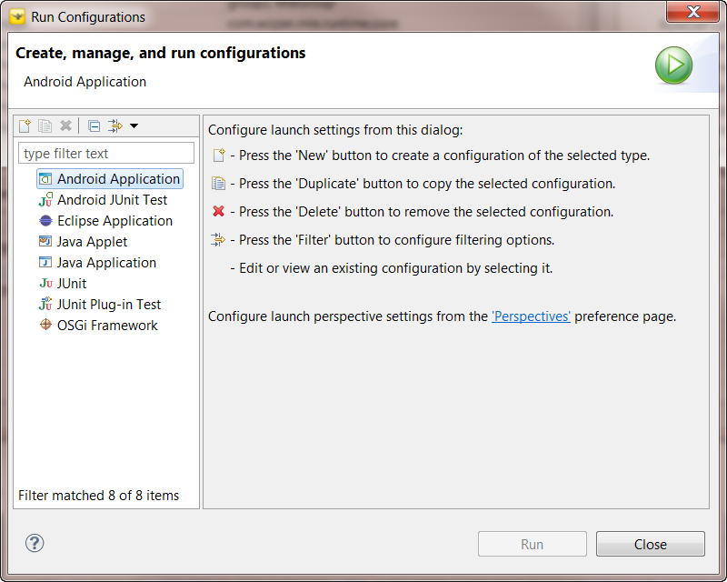
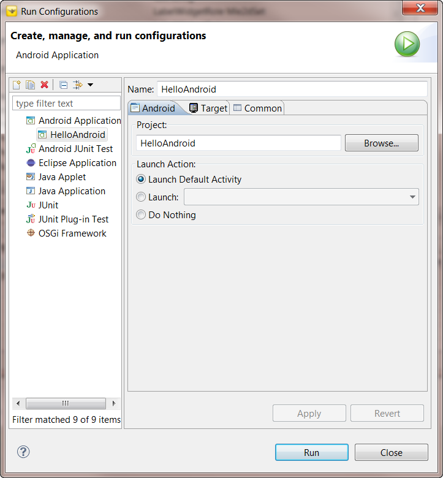
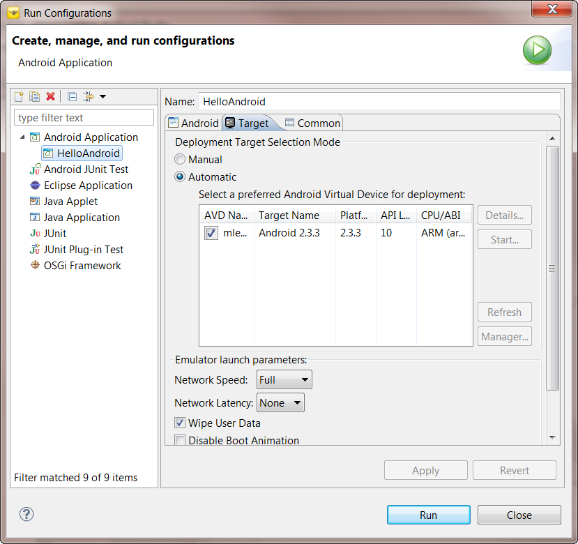
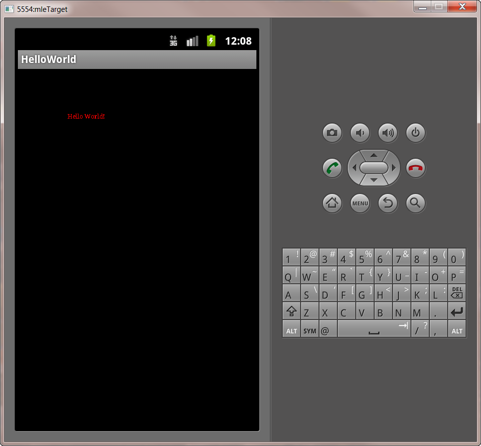

This document discusses how to execute a Magic Lantern Title. The first section identifies how to run the title from within the Magic Lantern Studio IDE. The second section discusses how to run the title from the redistributable application bundle (.apk package) on a Android device.
After creating a Magic Lantern Project using The Studio, the application developer will wish to execute and test his/her title. This may be done without leaving the IDE. The Studio uses the Eclipse launch configuration mechanism for running a title within the framework of the IDE. A launch configuration is a description of how to launch and execute a program. Launching in Eclipse is closely tied to the infrastructure for debugging, enabling the developer to make the logical progression from running the title to interactively debugging the title.
A launch configuration is created using an Eclipse wizard. To create a new configuration, use "Run->Run Configurations..." from the main Eclipse menu bar. This will start the launch configuration wizard dialog (see Figure 3.1)

Figure 3.1: Magic Studio Launch Configuration Wizard
Select the "Android Application" entry on the left-hand side of the dialog. The entry is highlighted in Figure 3.1.
Next press the 'New' button to create a configuration of the selected type. Doing so will create a new launch configuration for executing your title. Figure 3.2 shows an example the new configuration.

Figure 3.2: Launch Configuration for HelloAndroid Title
If you are following along in the "Magic Lantern Quick Start Guide", creating your first title using the HelloWorld default template, then fill in the information for launching your title. Type in the "Name" of your launch configuration (i.e. HelloWorld), and the Project (i.e HelloWorld).
If you choose to Run the application at this time, then you may not see the application run successfully because you have not yet created a Android target device. To create a Android device, follow the instructions outlined in Creating a Android Device
To specify the Android target device (once it has been created), select the "Target" tab.

Figure 3.3: Deployment Target Selection Mode
Select your target device. Select "Automatic" if it isn't already selected. Then select a preferred Android Virtual Device for deployment. Figure 3.3 shows the mleTarget AVD selected for the 2.3.3 platform. Select "Apply" to finalize your configuration.
Selecting "Run" will now launch your application title. It should look something like this:

Figure 3.4: HelloWorld Title Execution
The default template will not display the "Hello World!" string. The default template does not provide any Actors, so the display will be a blank screen. Figure 3.4 is displaying the result of using the HelloWorld Sample application.
There are several ways to stop the title. Since the title is running on the Android emulator, you can simply select the Close button ('X') in the emulator window. Another way to stop title execution is to use the DDMS perspective.
To stop title execution using the Android DDMS perspective, do the following:
The Title Application Bundle is a redistributable .apk archive. To run the HelloWorld title from the application bundle, the following steps should be taken: